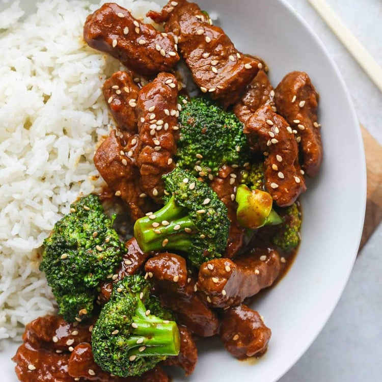

Prep Time: 10 minutes
Cook Time: 8 minutes
Total Time: 25 minutes
Servings: 4
Difficulty: Easy
Step 1: Turn on the Instant Pot and select the SAUTE setting. Heat the vegetable oil and sauté the garlic and ginger for about 30 seconds until fragrant.
Step 2: Add the beef and brown it on all sides, stirring occasionally.
Step 3: Deglaze the pot with ¼ cup of water, scraping the bottom to remove any browned bits.
Step 4: Add the sauce ingredients (soy sauce, brown sugar, sesame oil, and water or beef stock). Stir everything together and turn off SAUTE mode.
Step 5: Secure the lid and set the valve to SEALING. Select PRESSURE COOK (or MANUAL) and cook on HIGH pressure for 8 minutes.
Step 6: When the cooking program ends, perform a quick release to release the steam and remove the lid.
Step 7: Turn the Instant Pot back to SAUTE. Add the cornstarch slurry and stir for 1–2 minutes until the sauce thickens.
Step 8: Stir in the steamed broccoli. Serve hot over rice and garnish with sesame seeds if desired.